文档信息
| 版本号 | 撰写日期 | 撰写人 | 撰写内容 |
|---|---|---|---|
| V0.0 | 2026/4/19 | 黄彦飞 | 创建文档 |
| V0.1 | 2026/4/19 | 黄彦飞 | 背景说明 |
| V0.2 | 2026/4/24 | 黄彦飞 | 正文分析框架 |
| V0.3 | 2026/4/30 | 黄彦飞 | 补充内容 |
| V0.4 | 2026/5/11 | 黄彦飞 | 完善细节 |
前言
设计目的
促进玩家付费转化。
稳定长线留存。
文档参考
本案参考《洛克王国：世界》的通行证系统【拾光通行证】，进行系统策划案的复刻还原练习。
系统简述
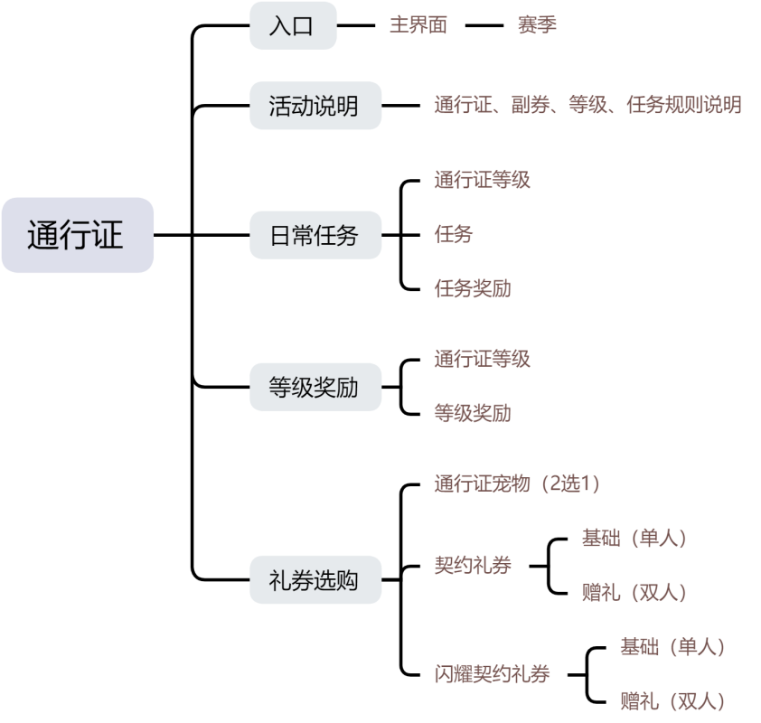
功能介绍
承载赛季长线养成资源、限定宠物、外观、道具的稳定获取途径
区分付费分层，设置免费，小礼券和大礼券付费，两种奖励点促进付费转化
用控制经验投放的方式提高玩家日常活跃，促使玩家长线留存
设置不同活跃度任务，引导玩家参与各类玩法
服用赛季内容资源和提升版本内容可玩性
整体跳转逻辑
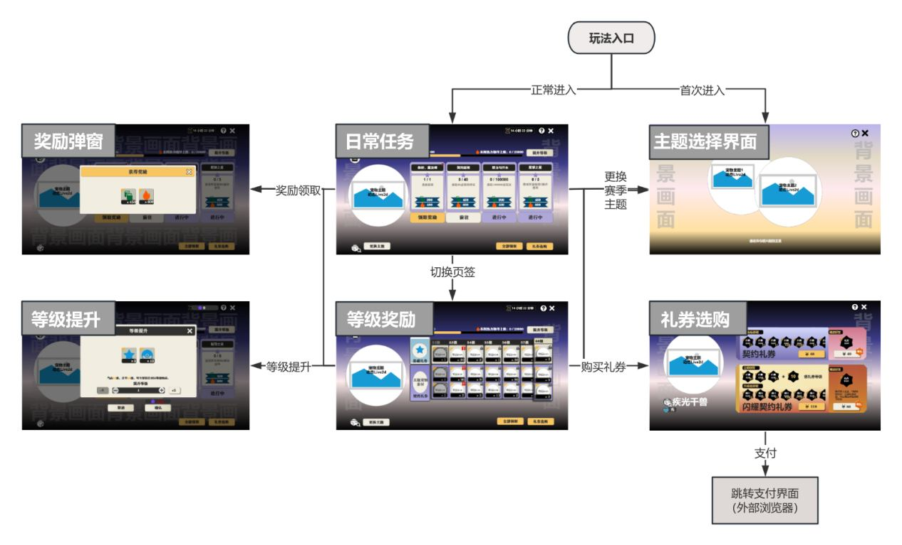
功能详解
通行证
1.2.系统入口
玩家等级达到15级，完成前期主线任务【魔法师手册：学院作业】前置章节，解锁到第三章节主线任务，自动解锁赛季活动，赛季通行证入口位于赛季活动界面内。
通行证界面展开会充满整个主界面。
赛季活动入口
赛季活动第一个入口位于主界面顶部导航栏赛季icon处，如下图所示。
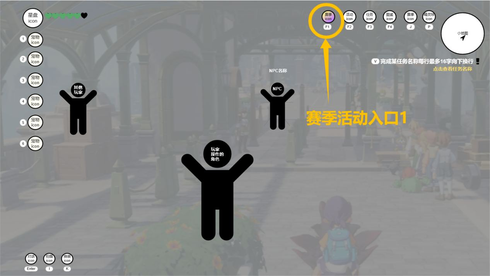
赛季活动第二个入口在左上角星盘icon内。
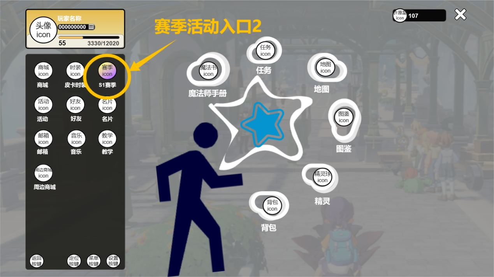
通行证入口
固定位于主界面顶部导航栏赛季icon处，如下图所示。
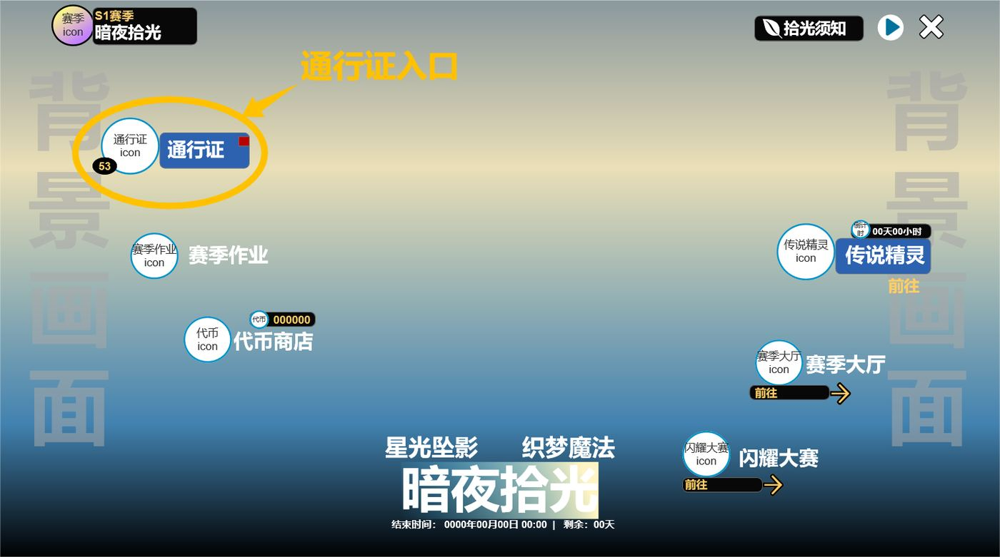
1.2.1.打开通行证
打开通行证界面分为该赛季首次打开和该赛季非首次打开。
该赛季首次打开通行证
首次在赛季活动界面点击通行证icon打开，自动跳转主题选择界面。
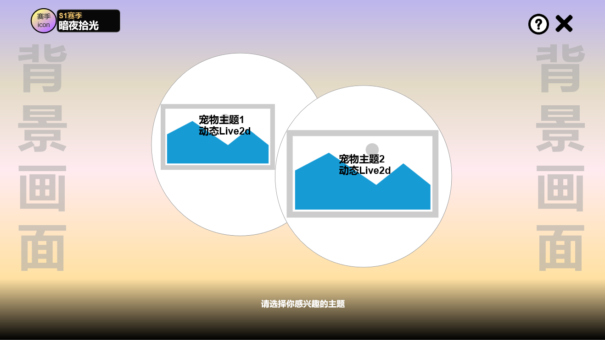
PC端/移动端点击要选择的主题icon，弹出主题确定界面。
主题确定界面两个宠物主题为动态Live2d。
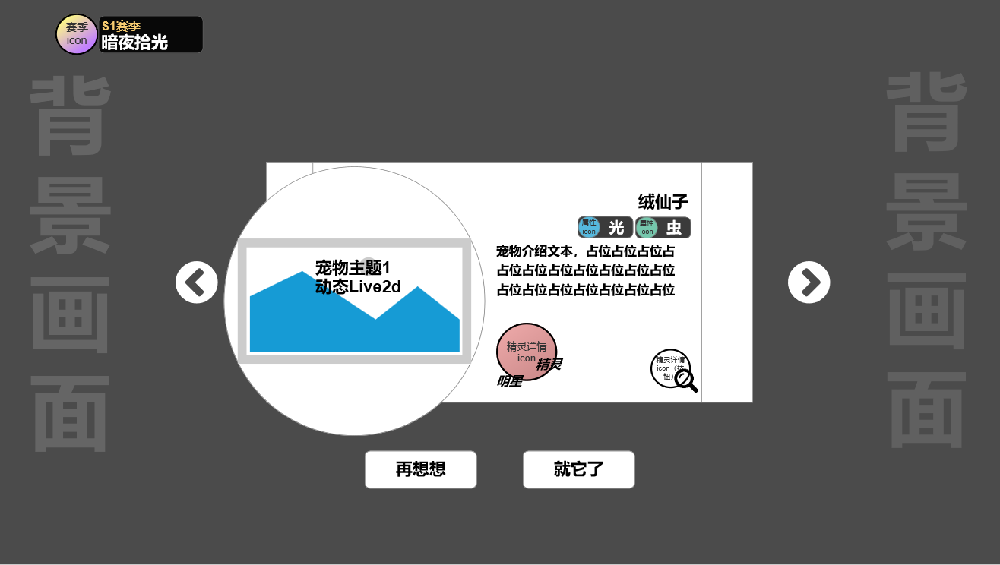
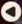
主题确定界面：和按钮可以进行主题切换，点击【再想想】返回主题选择界面，点击【就它了】切入通行证-日常任务界面。
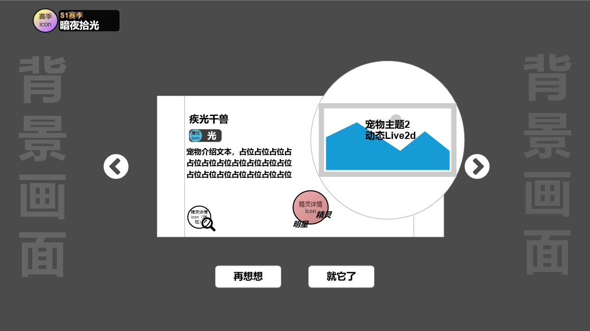
该赛季非首次打开通行证
PC端默认快捷键F1/Alt键呼出鼠标点击主界面顶部赛季icon/Alt键呼出鼠标点击主界面左上角星盘icon → 点击赛季icon，在赛季活动界面点击通行证icon打开。
移动端直接点击主界面顶部赛季icon/点击主界面左上角星盘icon → 点击赛季icon，在赛季活动界面点击通行证icon打开。
每次进入通行证，默认显示日常任务界面。
1.2.2.关闭通行证
PC端玩家点击右上角，或按快捷键ESC即可关闭通行证界面，返回到上一级赛季活动界面。
UE交互：通行证界面画面变浅，两侧从中间分开，分别向屏幕两侧淡出，交互动画约0.5s。
界面关闭时，自动保存当前通行证进度（等级数据、已领取奖励状态）。
1.2.通行证等级构成
通行证等级为赛季独立机制，新赛季开启后上一赛季等级、经验数据全部清空重置，玩家从1级重新开始积累。
通行证等级上限
单赛季通行证固定等级上限为100（仅举例）。
典藏赛季等可根据运营需求调整等级上限，例如120。
等级升级
通行证等级通过累计通行证经验【热力勋印】提升。
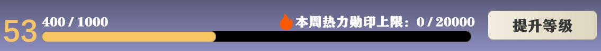
达到对应等级所需经验值后，自动升级并解锁对应等级奖励。
超出当前等级所需经验自动计入下一等级，无经验损耗，每升入下一等级固定需1000（仅举例）经验值。
每日可通过任务获取【热力勋印】值累计上限为2000（每周为14000）。（仅举例，具体数值见配置表）
每周可获取的经验值上限为20000（仅举例），与通过任务获取的最大经验差值为6000（仅举例）。通行证经验【热力勋印】还通过周常等产出。
双轨并行机制
免费基础通行证【基础礼券】与付费进阶通行证【契约礼券】共用同一等级体系。玩家等级进度、经验获取完全同步，仅解锁的奖励池不同。
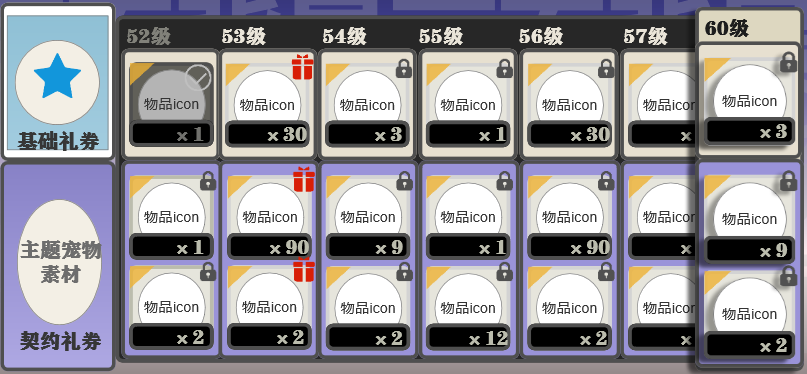
玩家解锁任意礼券，一次升级会同时解锁【基础礼券】与【契约礼券】的对应等级奖励。
1.3.通行证状态记录
当玩家以下操作时，系统需更新并记录当前通行证状态。
购买礼券；
领取任务奖励；
等级提升、领取等级奖励；
打开、关闭背包；
查看道具、资源等信息。
交互
2.1.等级提升交互逻辑
信息框位置
如下图所示，等级提升面板弹出位于界面正中。
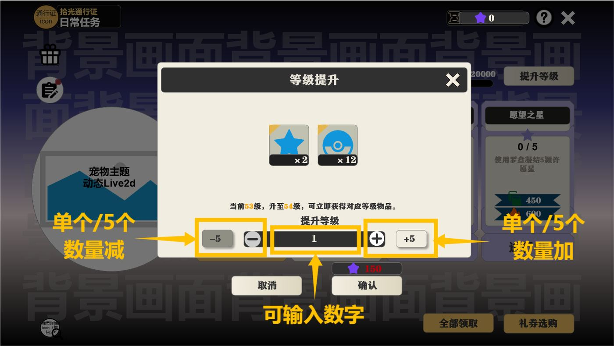
操作确认交互逻辑
确认框交互逻辑如下：
点击【确认】按钮 → 执行操作流程；
点击【取消】按钮 → 取消该操作，并返回记录的通行证界面（【等级奖励界面】）。
等级提升面板
操作面板交互逻辑如下：
输入限制规则
输入值必须为正整数，上限为8位数；
最小值为1；最大值不超过所操作道具当前堆叠数量；
当输入值大于最大值时，自动修正为最大值；
当输入为空或非法字符时，确认按钮置灰，不允许执行操作，并飘字“仅可输入数字”。
执行
点击【确认】按钮 → 执行操作流程；
点击【取消】按钮 → 取消该操作，并返回记录的通行证界面（【等级奖励界面】）。
2.2.解锁礼券交互逻辑
信息框位置
如下图所示，等级提升面板弹出位于界面正中。
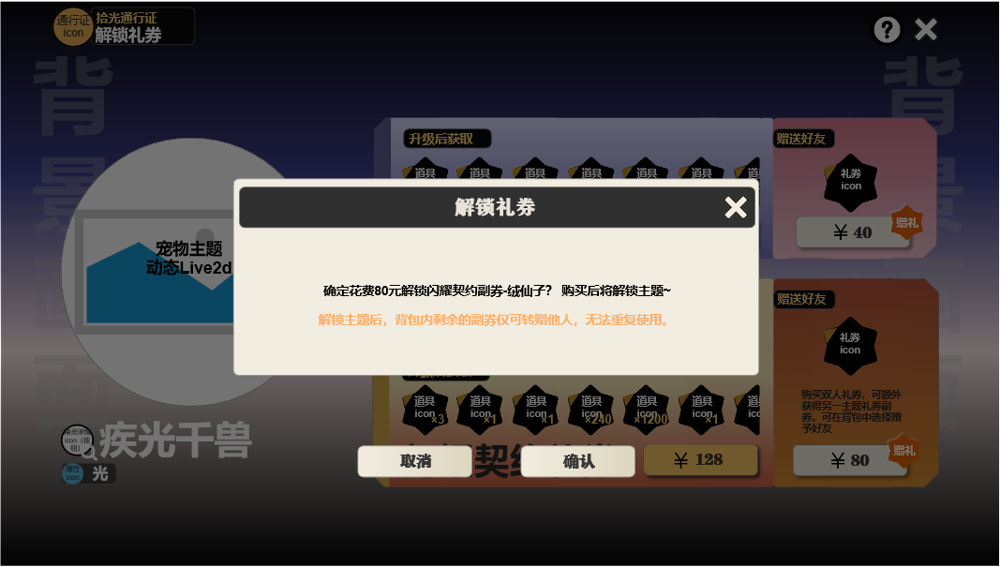
操作确认交互逻辑
确认框交互逻辑如下：
点击【确认】按钮 → 执行操作流程，跳转到网页支付；
点击【取消】按钮 → 取消该操作，并返回记录的通行证界面（【解锁礼券界面】）。
2.3.活动说明交互逻辑
信息框位置
如图所示，信息提示面板弹出位于界面正中。
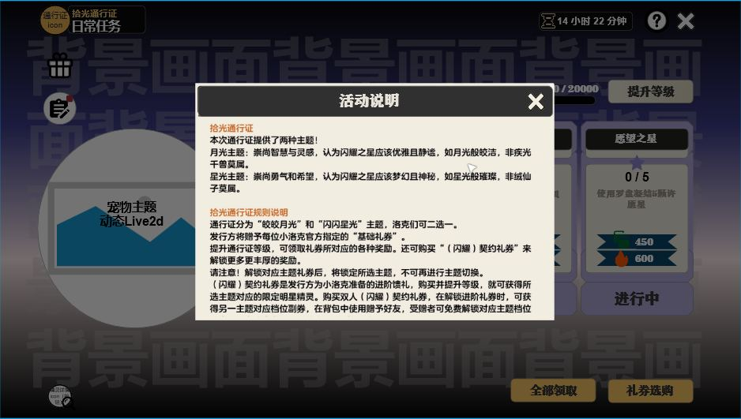
信息框内容
【活动说明】的文案待具体内容填充确定后可配置。
具体功能需求
3.1.页边功能
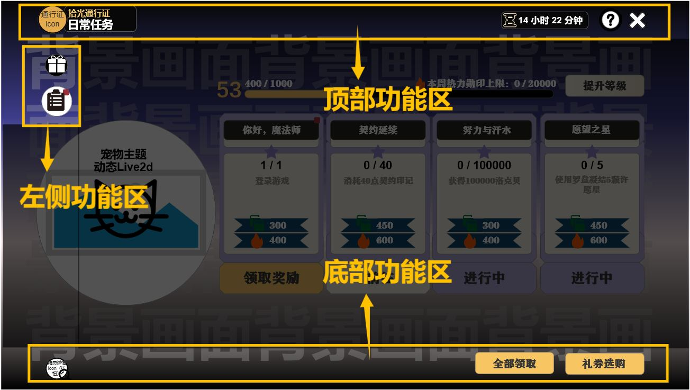
功能区位于界面的顶部和底部，向屏幕四角分别对齐。
功能区会在【日常任务】、【等级奖励】两个页面中复用。
3.1.1.顶部功能区
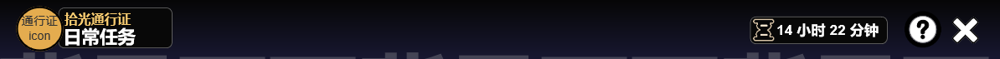
返回按钮

点击时返回按钮时回到来源界面。
活动说明按钮
玩家点击【活动说明】按钮，展开标题为【活动说明】的信息弹窗；
弹窗之外的范围，蒙版阴影模糊。
按ESC/点击关闭键/点击弹窗之外的范围，可以关闭弹窗界面。
可通过按住信息弹窗内任意处/触屏上下滑动手势，对当前列表内容进行垂直滚动浏览，无垂直滚动条图标。
剩余时间
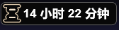
左侧使用一个沙漏倒计时icon，右侧文字显示当前赛季通行证剩余时间。
倒计时根据玩法时段自动计算，规则如下：
若剩余天数≥1，显示“本期剩余xx天”（向下取整天）
若不满1天时，显示“本期剩余xx时xx分”（向下取整数分钟）
若不满1小时时，显示“本期剩余xx分xx秒”（向下取整数秒钟）
若不满1分钟时，显示“本期剩余xx秒”（向下取整数秒钟）
倒计时归零/赛季结束，玩家若处于通行证界面，则自动退出至主界面。
拾光通行证icon
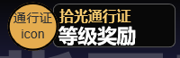
左侧使用通行证icon，右侧上层为【拾光通行证】文字，右侧下层根据玩家所处界面更换，为【日常任务】/【等级奖励】/【解锁礼券】
3.1.2.左侧功能区
包含【日常任务】、【等级奖励】两个页签；
同时有且只有一个页签是选中状态，另一个为非选中状态。选中状态的页签有高亮效果、泡泡跃动动画。
点击非选中状态页签时，跳转至对应界面，并切换界面页签的选中状态。加入一个极短的页签切换时间，约0.5秒，保证连续点击时显示正常。
界面页签若有可领取资源，页签icon上做红点效果。
日常任务界面按钮
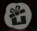
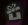
选中：；未选中：
等级奖励界面按钮
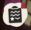
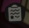
选中：；未选中：
3.1.3.底部功能区
注意右下角的UID和信号不要被遮挡，固定显示在UI顶部。
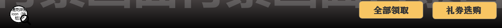
查看主题宠物按钮
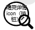
玩家点击查看主题宠物按钮 → 跳转至主题宠物信息界面。

按ESC/点击关闭键，可以关闭主题宠物信息界面，返回到来源界面。
更换主题按钮
玩家未购买当前赛季礼券，查看主题宠物按钮右侧会有更换主题按钮；
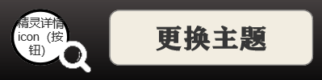
玩家购买当前赛季任意礼券，本赛季的更换主题按钮消失；
点击更换主题按钮 → 跳转至主题选择界面。（见1.2.1）
全部领取按钮
【日常任务】、【等级奖励】两个页面的资源出现可领取的图标时，底部功能区右下角触发【全部领取】按钮；
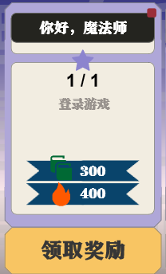
点击【全部领取】按钮 → 跳出获得奖励面板；
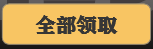
按ESC/点击弹窗之外的范围，可以关闭奖励面板。

礼券选购按钮
玩家点击礼券选购按钮 → 跳转至解锁礼券界面。
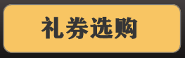

按ESC/点击关闭键，可以关闭解锁礼券界面，返回到来源界面。
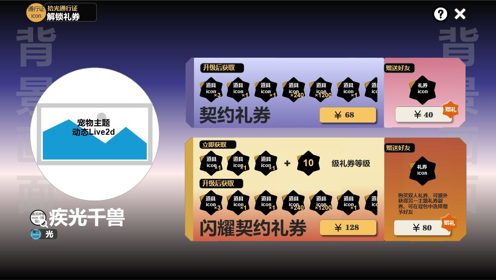
3.2.日常任务界面功能
此界面应用全部页边功能，见3.1.
此外，该界面还包括【等级区】、【任务区】、【主题宠物区】三个区域。
日常任务界面如下图所示。
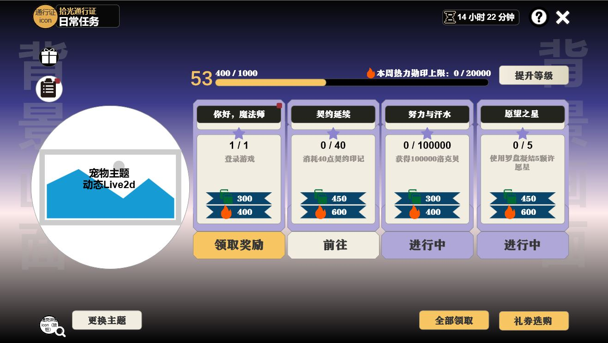
3.2.1.等级区
【等级区】包括：
等级信息；
等级经验；
本周热力勋印上限；
提升等级；
如下图所示。
等级信息
数字形式的固定信息，对应玩家当前通行证等级数值；
玩家提升通行证等级时，等级数值对应出现变动；
等级范围为 0~【最大等级】；
最大等级固定为100（仅举例）。
等级经验
代表当前等级提升到下一等级所需的经验值，固定为1000（仅举例）。
等级经验以数值和经验条上下两部分构成；
数值
显示具体信息，即xxxx/1000；
xxxx数值范围为0~1000；
xxx数值达到1000时自动提升至下一等级（显示模式为非累积，即刚好升级后显示为0/1000）；
经验条
素材需要底部暗色条和顶部亮色条；
反映角色当前经验值与升级所需经验值的比例；
经验值提升时顶部亮色条做向右前进的动态效果。
本周热力勋印上限
【热力勋印】：作为提升通行证等级的资源，俗称通行证等级经验值。玩家通过完成通行证任务和参与活动获得。
热力勋印icon为火苗样式；
热力勋印icon后显示【本周热力勋印上限：xxxxx/20000】
xxxxx数值范围为0~20000；
每周日凌晨四点刷新本周获得的热力勋印数值，恢复为0/20000；
提升等级按钮
玩家点击提升等级按钮 → 跳转至提升等级窗口；
窗口信息如下图所示：
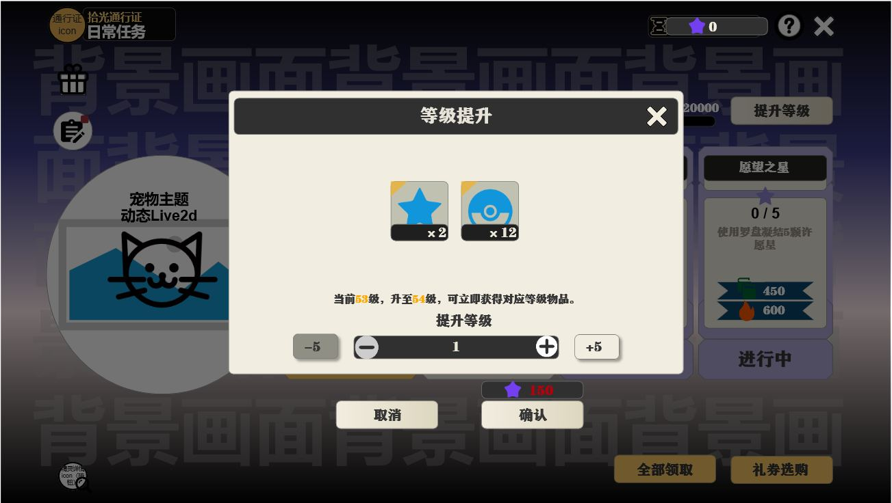
提升等级窗口之外的范围，蒙版阴影压暗。
按ESC/点击关闭键/点击弹窗之外的范围，可以关闭提升等级窗口。
可点击【可立即获得对应等级物品】，跳出物品信息小窗口，物品信息小窗口之外的范围，蒙版阴影压暗，如图所示。
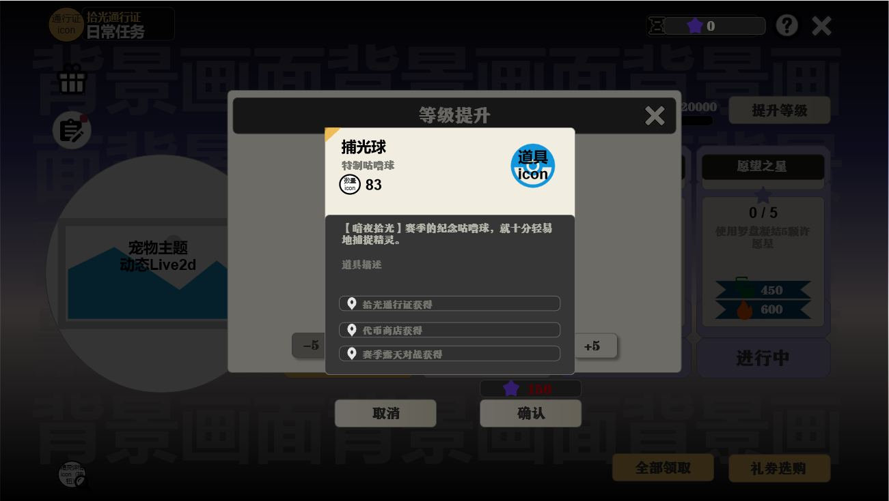
3.2.2.任务区
【任务区】包括四个固定每日任务，任务栏横向排布，一个任务为一列。
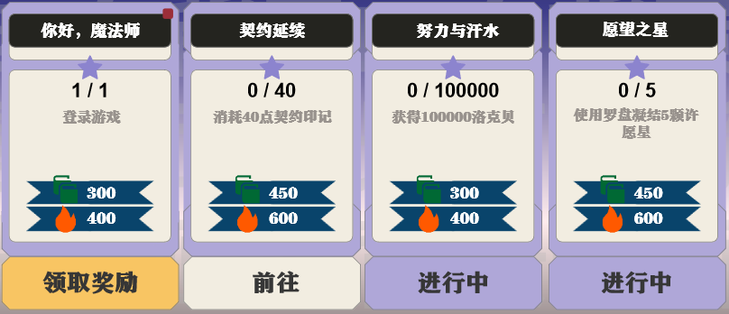
红点规则：
对于待领取的任务，其所在页签的任务名称右上显示红点。
对于未确认的新任务，其所在页签显示“New”。
红点只会显示在对应页签的任务名称右上方。
任务排列规则：
任务奖励未被领取 → 从左到右的固定任务顺序是【你好，魔法师】【努力与汗水】、【契约延续】、【愿望之星】；
任务奖励被领取 → 按照【前往>进行中>达成】的顺序进行排列。
多个达成任务且任务奖励被逐个领取 → 按照任务奖励被领取的先后顺序进行排列。
多个达成任务且任务奖励被统一领取 → 按照固定任务顺序进行排列。
任务状态：
领取奖励按钮
素材底板为黄色，为可交互状态。
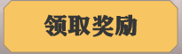
点击领取奖励按钮 → 弹出获得奖励窗口，如图所示。
奖励窗口之外的范围，蒙版阴影压暗
按ESC/点击弹窗之外的范围，可以关闭获得奖励窗口。
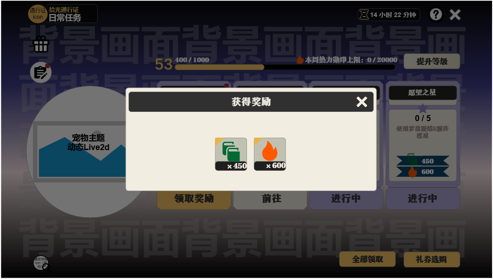
执行
若领取奖励获取的【热力勋印】值突破当前等级提升到下一等级所需的经验值，则执行：
弹出获得奖励窗口0.2s后 → 立刻弹出拾光通行证等级晋升窗口，如图所示。
通行证等级提升窗口之外的范围，蒙版阴影压暗。
按ESC/点击弹窗之外的范围，可以关闭获得通行证等级晋升窗口，回到获得奖励窗口。
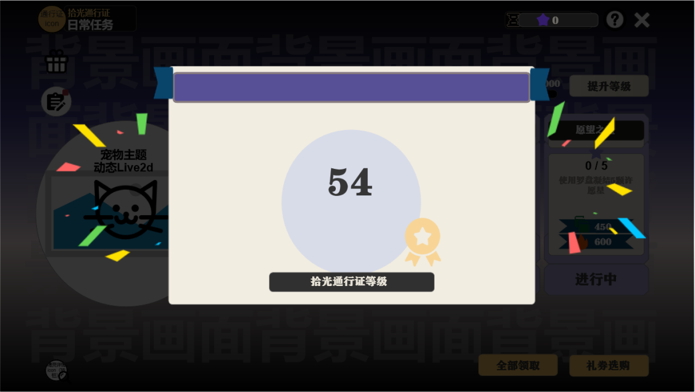
3.2.3.主题宠物区
玩家选择当前的赛季主题后，被选择的赛季主题专属宠物形象会固定显示在界面左侧。
宠物形象显示适用于【日常任务界面】、【等级奖励界面】、【解锁礼券界面】。
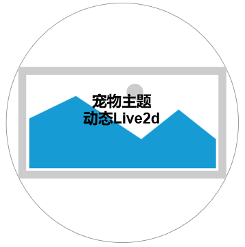
宠物形象表现为动态立绘，简单Live2d；
切换界面时，宠物形象动态立绘从0帧重新播放。
宠物形象动态立绘不可交互。
3.3.等级奖励界面功能
此界面应用全部页边功能，见3.1.
此外，该界面还包括【等级区】、【礼券奖励区】、【主题宠物区】三个区域，界面如下图所示。
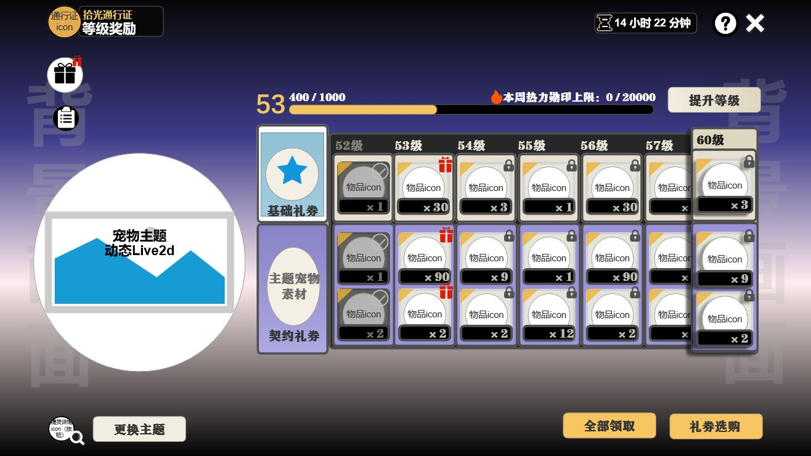
每次跳转到等级奖励界面时，礼券奖励区的六列奖励资源栏有从左到右淡入效果，效果持续0.5s（可根据调整）；
切换界面时，有切换音效。
3.3.1.礼券奖励区
礼券奖励区包括【基础礼券】奖励资源栏和【契约礼券】奖励资源栏，以及右侧的下一阶段奖励展示。
如下图所示。
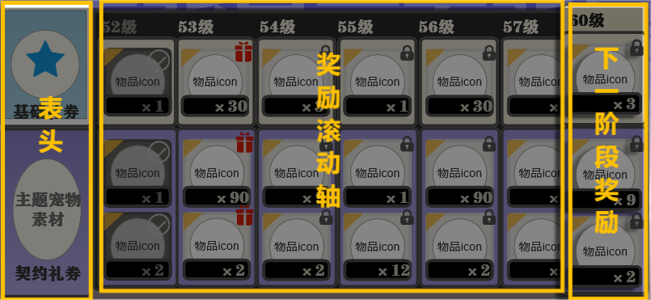
【基础礼券】奖励资源栏
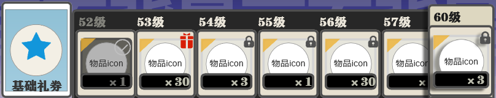
【契约礼券】奖励资源栏
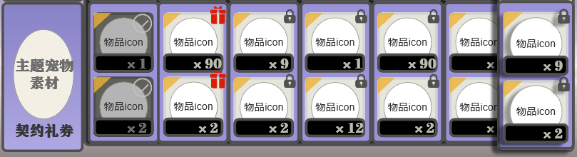
礼券类型表头
参考下图。
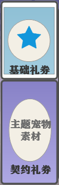
上部：【基础礼券】素材图，标明【基础礼券】文本。
下部：【契约礼券】素材图，标明【契约礼券】文本。
点击【契约礼券】区域时 → 跳转【解锁礼券】界面。

当没有开通付费【契约礼券】时，【契约礼券】文本的右上角添加锁定图标；
玩家没有开通【契约礼券】，领取奖励时，【契约礼券】奖励资源栏里的奖励无法被领取，奖励素材图右上角有锁定图标；
玩家开通【契约礼券】，领取奖励时，【契约礼券】奖励资源栏里的奖励可以被领取。
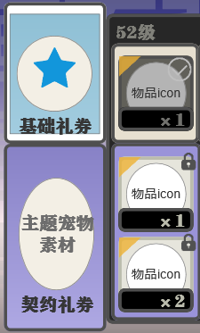
奖励滚动轴
结构
按照通行证等级从低到高的顺序，从左到右依次横向排列，每一列与礼券类型表头基本等宽（略窄于表头），如下图所示。
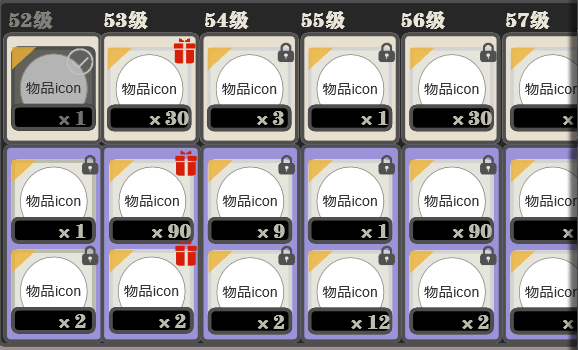
上部分：
最上：展示对应等级。
中部偏上：展示【基础礼券】这一免费方案的奖励。
下部分：
中部偏下：展示【契约礼券】这一付费方案的奖励。
最下：展示【契约礼券】这一付费方案的固定奖励【许愿星】资源*2，61~100级无【许愿星】资源，最下栏为空（【许愿星】可用于兑换稀有道具和时装）。
内容展示
奖励物品展示时使用对应icon；
物品icon下方展示数量，左上角展示品质，右上角展示领取状态。
已领取状态，物品icon右上角打钩，且物品icon变为静态灰度icon，如图所示；
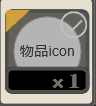
可领取状态，右上角有红点标志；

尚未解锁时，物品icon右上角有锁定图标。
可配置内容：
每一级的付费/免费奖励物品id、数量。
状态变化：
所有奖励的变化以单元格结算；
通行证等级≥奖励等级 → 对应免费奖励变为待领取；
通行证等级≥奖励等级且开通了任意付费计划 → 对应付费奖励变为待领取，待领取奖励被领取后，变为已领取状态。
交互逻辑：
拖动
奖励区做横向滚轴效果，可水平左右拖动；
每翻过一列，都会播放效果音，连续触发效果音时为连续音。
滚轴向某个方向到尽头，用力拉动时有黑框拖出效果，停止拉动有物品框回弹效果。
点击
点击待领取物品/【全部领取】按钮时，领取整个单元格内的物品，弹出【恭喜获得】窗口，（奖励一起领取的）获取提示与弹出音效。
点击不可领取的物品（已领取/未解锁），弹出该物品的详细信息窗口与弹出音效。
领取的物品类型＜6时，不可左右滑动，弹窗长度固定，弹窗显示如图所示；
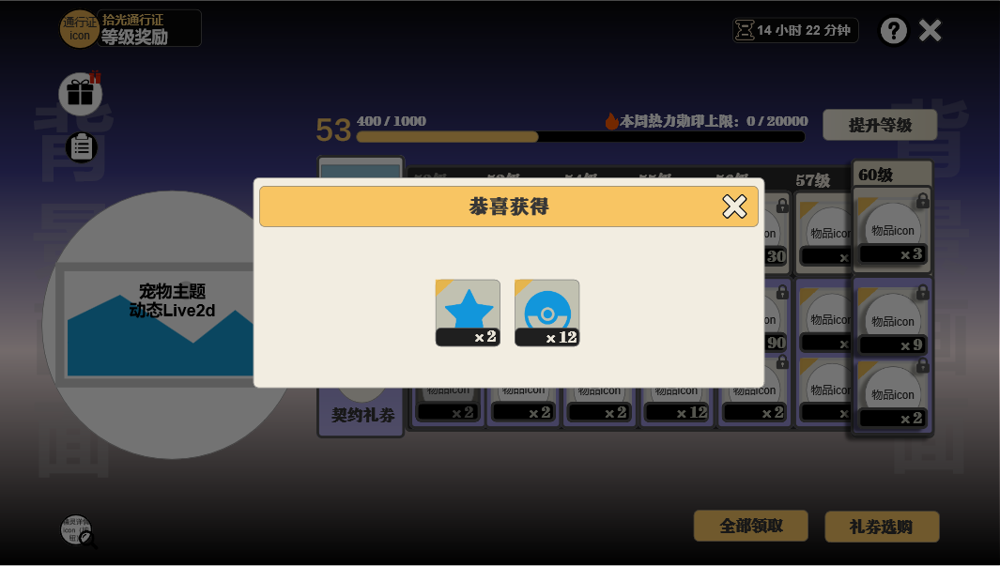
领取的物品类型＞6时，可左右拉动查看被隐藏的物品，弹窗长度变化与物品显示如图所示；
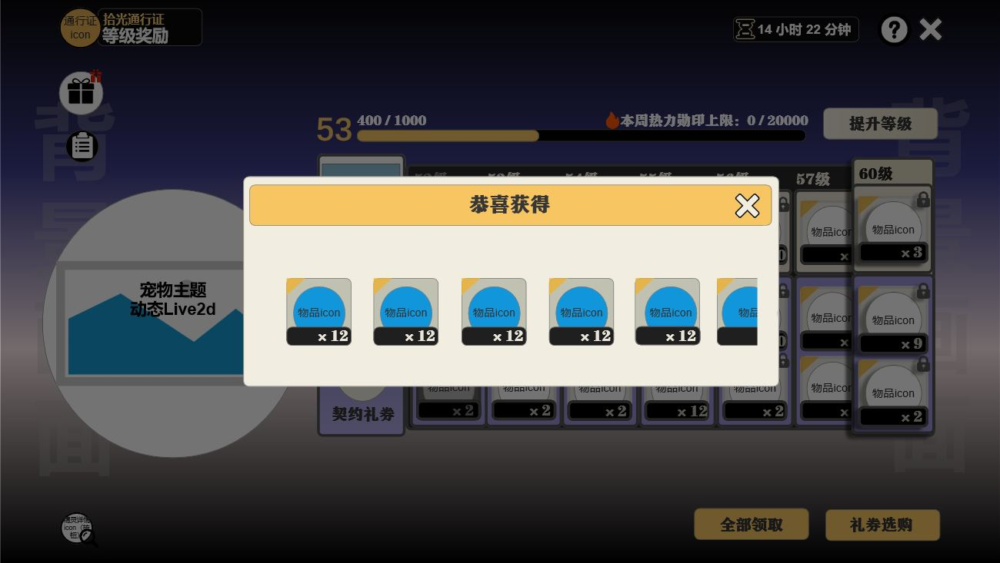
左右拉动时，弹窗下方出现类似滚轮的阴影样式；
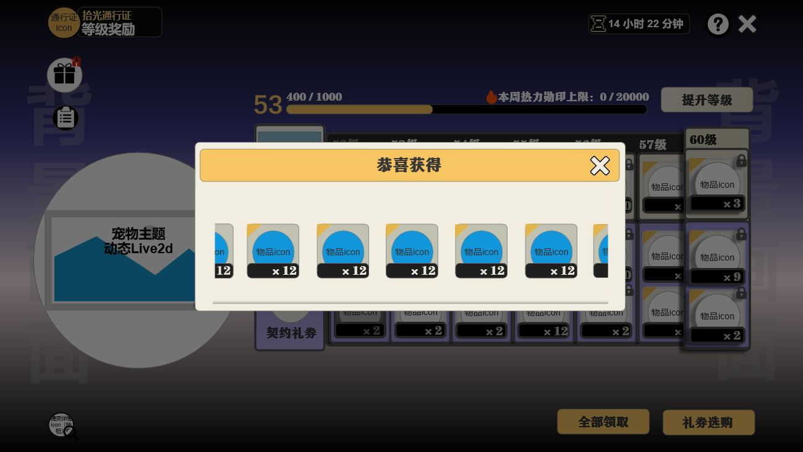
下一阶段奖励
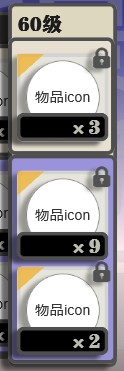
此区域固定在界面右侧；
复用单元格展示奖励的逻辑；
展示等级为滚动轴中未展示的下一个5的整倍数；
当卷轴拖到尽头时，没有下一个5的整倍数，则展示满级奖励。
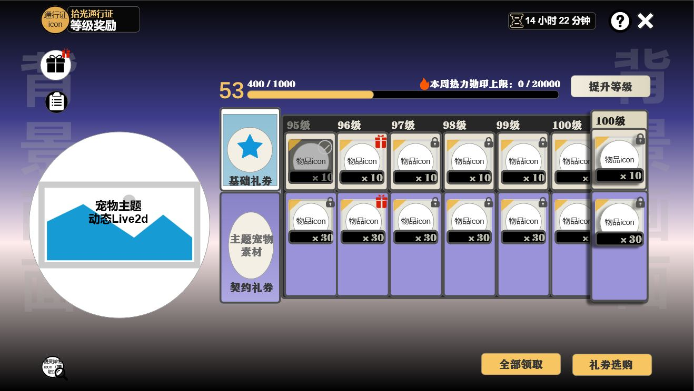
3.4.等级奖励界面功能
从【日常任务界面】/【等级奖励界面】点击【礼券选购】按钮 → 跳转【等级奖励界面】。
此界面应用【页边功能】中的【返回按钮】、【活动说明按钮】、【拾光通行证icon】、【查看主题宠物按钮】，见3.1.
此外，该界面还包括【契约礼券】、【闪耀契约礼券】两个礼券购买区域，界面如下图所示。
3.4.1.契约礼券区
【契约礼券】区域信息如图所示，包括左侧【单人契约礼券】和右侧【双人契约礼券】。
3.4.2.闪耀契约礼券区
【闪耀契约礼券】区域信息如图所示，包括左侧【单人闪耀契约礼券】和右侧【双人闪耀契约礼券】。
3.4.3.价格按钮
每个礼券下方有两个价格按钮
按钮上方的价格可配置浮点数；价格前有货币符号￥。
所有礼券未解锁前，【单人闪耀契约礼券】价格按钮右上方有【异色】图标，两种双人礼券价格按钮右上方有【双人】图标；
任意礼券被解锁后，被解锁的购买按钮显示“已购买”，置灰，不可互动，如图所示。
任意单人礼券被解锁后，对应的双人礼券价格按钮右上方显示【赠礼】图标；
左侧按钮对应单人版本，右侧按钮对应双人版本。
本界面有三种支付状态
【未解锁】、【契约礼券】（单人/双人）、【闪耀契约礼券】（单人/双人）；每个版本结束时，状态被重置为【未解锁】；
状态流转规则
【未解锁】状态可以付费解锁【契约礼券】或【闪耀契约礼券】；
【契约礼券】可以付费升级为【闪耀契约礼券】；
【闪耀契约礼券】不可再升级。
如果玩家处于【未解锁】状态
全部支付按钮都可交互；
上部分【契约礼券】与下部分【闪耀契约礼券】都显示对应版本价格，如图所示；
点击任意购买按钮后跳转对应付款界面。
付款验证成功，则提示“付款成功”，切换至对应状态。
付款验证失败，则界面和状态都不变化。
如果玩家处于【契约礼券】（单人/双人）状态
仅购买【单人契约礼券】
需支付单人契约礼券本身的价格；
购买后，左侧购买按钮显示“已购买”，置灰，不可互动；
购买后，右侧购买按钮可交互（注意此时显示的支付价格是升级双人的价格）
直接购买【双人契约礼券】
需支付单人契约礼券本身的价格+升级双人的价格；
左侧和右侧购买按钮都显示“已购买”，置灰，不可互动；
如果玩家处于【闪耀契约礼券】（单人/双人）状态
状态显示逻辑同【契约礼券】。